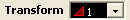
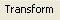
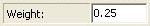

Select the first transform. Do this by using the handy transform selection menu  on the right-hand side of the transform editor, right below the image preview window. The transform you want will have a red triangle beside the number 1. (If the triangle is not red, you need to go to the main Apophysis window, select the options menu, and click on options to bring up the Options dialog. In the options dialog, click on the editor tab, and uncheck the box that says 'use transform colors.' The use transform colors section is sometimes useful, but most of the time it results in one or more transforms that are really hard to see.)
After transform 1 is selected, select the Transform Tab . The right-hand side of your transform editor should look like the image below.
In the middle of the transform tab, you will see the weight dialog box. Change the weight  to 0.25. Go back to the transform selection menu and do that for all of the other transforms. This will ensure that every part of your fractal is the same brightness as every other part. In many fractals, you see that certain parts are more well-defined, and certain parts are pale and ghostly. This is often because of unequal weights. Sometimes that effect is desirable, but not in this case, so make sure all of your weights are equal.